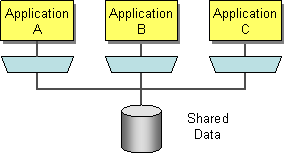

Chi Siamo
Perchè lo facciamo

Sommario
- Introduzione ad OSGi e ServiceMix
- Introduzione ad Apache Camel
- Utilizzare GWT su ServiceMix
- SensorMix: Architettura di esempio
- Fun facts: perchè ci piace questa architettura
Introduzione a OSGi e Servicemix
Ovvero un approccio a SOA modulare per i Backend
OSGi: questo sconosciuto
- OSGi: Open Service Gateway initiative
- OSGi Alliance: organizzazione fondata nel 1999 da Ericsson, IBM, Oracle e altri
- OSGi Framework: è un layer di modularità per la piattaforma Java
Il nucleo delle specifiche definisce la gestione del modello del ciclo di vita del software, i moduli (chiamati bundles), un service registry e un ambiente di esecuzione.
Una Metafora:
Pensate ai servizi di Windows o demoni Unix ma completamente Java

Perchè nasce OSGi
OSGi nasce con lo scopo di creare sistemi embedded per mercati residenziali, automotive e M2M. In questi contesti è spesso necessario comunicare con i devices attraverso protocolli differenti.
Il fine, quindi, era quello di fornire un modello di programmazione capace di realizzare servizi end-to-end creando uno strato di astrazione che unificasse i differenti protocolli.
Perchè si espande
We’ve all used development platforms in the past, such as Java Enterprise Edition (JEE), and even though there have been great advances in this industry, we’re still building large complex systems, which are hard to develop, maintain, and extend.
Implementazioni OSGi
Esistono diverse implementazioni di OSGi. Quelle più complete sono:
- Apache Felix
- Eclipse Equinox
- Knopflerfish
OSGi: il framework
Il framework può essere rappresentato con tre layer:
- Il module layer definisce il concetto di modulo OSGi: il Bundle
- Il lifecycle layer definisce come i bundles sono dinamicamente installati e gestiti nel framework OSGi
- Il service layer supporta e promuove un modello di sviluppo di applicazioni flessibile che incapsula concetti resi di uso comune dal service-oriented programming
OSGi: il module layer
Il cuore del module layer è il bundle.
Il Bundle è un JAR che contiene metadati extra (manifest).
A differenza dei JAR il bundle ha:
- un classpath “ristretto” al solo bundle
- un manifest più ricco
Grazie al manifest è possibile estendere la visibilità del classpath dichiarando esplicitamente le proprie dipendenze
OSGi: il manifest
Nel manifest viene specificato anche:
- L’identificazione e la descrizione
- Il classloading
- L’activazione
Esempi:
OSGi: il manifest
Manifest di un semplice JAR compilato con maven
Manifest-Version: 1.0
Build-Jdk: 1.7.0_40
Built-By: gdg-firenze
Created-By: Apache Maven
OSGi: il manifest
Manifest di un Bundle
Manifest-Version: 1.0
Bnd-LastModified: 1386750447262
Build-Jdk: 1.7.0_40
Built-By: gdg-firenze
Bundle-ManifestVersion: 2
Bundle-Name: GDG Firenze :: Sensormix :: Example Bundle
Bundle-SymbolicName: example-bundle
Bundle-Vendor: GDG Firenze :: Sensormix Team
Bundle-Version: 1.0.0.SNAPSHOT
Created-By: Apache Maven Bundle Plugin
Export-Package:
com.google.developers.gdgfirenze.model;version="1.0.0.SNAPSHOT",
com.google.developers.gdgfirenze.osgi;version="1.0.0.SNAPSHOT",
com.google.developers.gdgfirenze.service;version="1.0.0.SNAPSHOT"
Import-Package:
javax.jws,javax.jws.soap,javax.xml.bind.annotation,javax.xml.ws
Tool: Bnd-1.50.0
OSGi: il Lifecycle Layer
Il lifecycle layer ha due scopi:
Esternamente gestisce il ciclo di vita del bundle.

OSGi: il Lifecycle Layer
Il lifecycle layer ha due scopi:
Internamente definisce Bundle Activator

= public static void main(String[] args)
OSGi: il Service Layer
L’OSGi service layer promuove l’approccio basato su interface ed in particolare la separazione tra interfacce e implementazioni.
I Servizi OSGi sono interfacce Java che rappresentano un contratto tra il service provider e i service clients.
OSGi: la Service Platform

L’OSGi definisce un set minimo di servizi per agevolare lo sviluppo di applicazioni modulari
- Cofiguration Admin (hot configuration)
- Event Admin
- Console Admin
- Log Service
- Blueprint component framework
Karaf: un OSGi container
Karaf è un OSGi container in cui sono deployati bundles (e servizi) aggiuntivi per fornire ulteriori funzionalità tra cui Hot deployment, Dynamic configuration, Logging System, Extensible Shell console (SSH)
Karaf è un chiaro esempio di architettura basata su OSGi
Servicemix: un ESB su OSGi

Le principali funzionalità di Servicemix sono:
- reliable messaging with Apache ActiveMQ
- messaging, routing and Enterprise Integration Patterns with Apache Camel
- WS-\* and RESTful web services with Apache CXF
- OSGi-based server runtime powered by Apache Karaf
Altre funzionalità offerte da Smx:
- loosely coupled integration between all the other components with Apache ServiceMix NMR including rich Event, Messaging and Audit API
- complete WS-BPEL engine with Apache ODE
OSGi e Spring
Uso di Spring dentro a Karaf/Servicemix
Lo springframework fornisce molte features interessanti (dependency injection, ORM, AOP,...)
Lo Spring Deployer riconosce i file Spring all'interno del folder META-INF/spring di un Jar, e ne istanzia i bean che vi sono definiti, senza necessità di utilizzare le API OSGi
<?xml version="1.0" encoding="UTF-8"?>
<beans xmlns="http://www.springframework.org/schema/beans"
xmlns:context="http://www.springframework.org/schema/context"
xmlns:xsi="http://www.w3.org/2001/XMLSchema-instance"
xsi:schemaLocation="http://www.springframework.org/schema/beans
http://www.springframework.org/schema/beans/spring-beans-3.0.xsd">
<bean id="consumer" class="com.myapplication.HelloWorldConsumer"
destroy-method="osgiDestroy" init-method="osgiInit"/>
</beans>
OSGi e Spring
Spring DM
Spring DM permette di utilizzare servizi OSGi da Spring in modo trasparente.
<?xml version="1.0" encoding="UTF-8"?>
<beans xmlns="http://www.springframework.org/schema/beans"
xmlns:xsi="http://www.w3.org/2001/XMLSchema-instance"
xmlns:osgi="http://www.springframework.org/schema/osgi"
xmlns:util="http://www.springframework.org/schema/util"
xmlns:context="http://www.springframework.org/schema/context"
xsi:schemaLocation="http://www.springframework.org/schema/osgi
http://www.springframework.org/schema/osgi/spring-osgi.xsd">
<osgi:service ref="eventService"
interface="com.myapplication.HelloWorldService" />
</beans>
Introduzione ad Apache Camel
Ovvero un modo agile per interfacciarsi a sistemi eterogenei
“Integrare”
Cosa si intende quando parliamo di integrazione?
Si intende trovare una soluzione al seguente problema:
“Come posso far funzionare insieme molteplici applicazioni attraverso lo scambio di informazioni?”
Enterprise Integration Patterns
Gli Enterprise Integration Patters offrono soluzioni per affrontare il precedente problema.
Cosa sono gli EIP?
Un libro!
EIP Importanti
- Message Channel:
- How does one application communicate with another using messaging?
- Message:
- How can two applications connected by a message channel exchange a piece of information?
- Message Router:
- How can you decouple individual processing steps so that messages can be passed to different filters depending on a set of conditions?
- Message Translator:
- How can systems using different data formats communicate with each other using messaging?
- Message Endpoint:
- How does an application connect to a messaging channel to send and receive messages?
- Dead Letter Channel:
- What will the messaging system do with a message it cannot deliver?
- Message Bus:
- What is an architecture that enables separate applications to work together, but in a decoupled fashion such that applications can be easily added or removed without affecting the others?
- Command Message:
- How can messaging be used to invoke a procedure in another application?
- Document Message:
- How can messaging be used to transfer data between applications?
- Event Message:
- How can messaging be used to transmit events from one application to another?
- Request-Reply:
- When an application sends a message, how can it get a response from the receiver?
- Canonical Data Model:
- How can you minimize dependencies when integrating applications that use different data formats?
Come si può fare integrazione?
I principali metodi tramite cui avviene integrazione sono:
- Scambio di file

- Database condiviso

- Remote Procedure Invocation

- Messaging

Gli EIP si focalizzano sulla integrazione via “messaging” e definiscono una notazione per rappresentare le soluzioni di integrazione.
Notazione EIP

Soluzioni con EIP

Soluzioni con EIP

Soluzioni con EIP

Attenti a questa qui!
Come implementare facilmente EIP?
(domanda retorica)
Integrare è però difficile perchè esiste una vasta eterogeneità di protocolli, interfacce e formati.
Come si possono implementare su una piattaforma Java gli Enterprise Integration Pattern?
con
Apache Camel
Concise
Application
Messaging
Exchange
Language
Apache Camel
Apache Camel è un framework di intrgrazione open-sorce versatile basato sugli Enterprise Integration Patterns del libro di Hohpe e Woolf.
Include un vasto insieme di componenti per funzionare con molti protocolli di trasporto e formati dati e permette di definire regole di instradamento e intermediazione attraverso l’uso di "domain-specific language".
...si presta talmente bene alla integrazione che ServiceMix, dalla versione 3 alla 4, ha abbandonato la tecnologia JBI per adottare un nuovo approccio alla integrazione basato su Camel e OSGi.
Esempio: Content Based Router
from newOrder
choice
when isWidget to widget
otherwise to gadget
Content Based Router in Java DSL
from newOrder
choice
when isWidget to widget
otherwise to gadget
choice
when isWidget to widget
otherwise to gadget
public class MyRoute extends RouteBuilder {
public void configure() throws Exception {
from("activemq:queue:newOrder")
.choice()
.when(xpath("/order/product = 'widget'"))
.to("activemq:queue:widget")
.otherwise()
.to("activemq:queue:gadget")
.end();
}
}
Content Based Router in Spring XML
from newOrder
choice
when isWidget to widget
otherwise to gadget
choice
when isWidget to widget
otherwise to gadget
<camelContext xmlns="http://camel.apache.org/schema/spring">
<route>
<from uri="activemq:queue:newOrder"/>
<choice>
<when>
<xpath>/order/product = 'widget'</xpath>
<to uri="activemq:queue:widget"/>
</when>
<otherwise>
<to uri="activemq:queue:gadget"/>
</otherwise>
</choice>
</route>
</camelContext>
Camel: componenti
162 componenti elencati su camel.apache.org/components.html
| ActiveMQ | ActiveMQ Broker | Activiti | AHC | AMQP | APNS | Atom | Avro | |
| AWS-CW | AWS-DDB | AWS-S3 | AWS-SDB | AWS-SES | AWS-SNS | AWS-SQS | Bean | |
| Bean Validation | Browse | Cache | Class | CMIS | Cometd | Context | ControlBus | |
| CouchDB | Crypto | CXF | CXF Bean | CXFRS | DataFormat | DataSet | Db4o | |
| Direct | Direct-VM | Disruptor | DNS | EJB | ElasticSearch | Esper | EventAdmin | |
| Exec | File | Flatpack | FOP | FreeMarker | FTP | FTPS | ||
| GAuth | Geocoder | GHttp | GLogin | GMail | GTask | Guava EventBus | Hazelcast | |
| HBase | HDFS | Hibernate | HL7 | HTTP | HTTP4 | iBATIS | IMAP | |
| IMAPS | Infinispan | IRC | JavaSpace | JBI | JCIFS | jclouds | JCR | |
| JDBC | Jetty | JGroups | JMS | JMX | JPA | Jsch | JT/400 | |
| Kestrel | Krati | Language | LDAP | Log | Lucene | MINA | MINA2 | |
| Mock | MongoDB | MQTT | MSV | Mustache | MVEL | MyBatis | Nagios | |
| Netty | Netty HTTP | NMR | OptaPlanner | Pax-Logging | POP3 | POP3S | Printer | |
| Properties | Quartz | Quartz2 | Quickfix | RabbitMQ | RCode | Ref | Restlet | |
| RMI | RNC | RNG | Routebox | RSS | Salesforce | SAP NetWeaver | Scalate | |
| SEDA | SERVLET | SFTP | Sip | SJMS | Smooks | SMPP | SMTP | |
| SMTP | SNMP | Solr | Splunk | Spring Event | Spring LDAP | Spring Neo4j | Spring Redis | |
| Spring Web Services | SpringBatch | SpringIntegration | SQL | StAX | Stomp | Stream | StringTemplate | |
| Stub | Test | Timer | Validation | Velocity | Vertx | VirtualBox | ||
| VM | Weather | Websocket | XML Security | XMPP | XQuery | XSLT | Yammer | |
| ZeroMQ | Zookeeper |
Camel: data format
25+ data format elencati su camel.apache.org/data-format.html
| Avro | Base64 | BeanIO | Bindy | Castor | |
| Crypto | CSV | EDI | Flatpack DataFormat | GZip data format | |
| HL7 DataFormat | JAXB | JiBX | JSON | PGP | |
| Protobuf | Serialization | SOAP | String | XmlBeans | |
| XmlJson | XMLSecurity DataFormat | XStream | Zip DataFormat | Zip File DataFormat |
Camel in Servicemix
Una volta attivati i bundle di Camel su Karaf-Servicemix...

Camel in Servicemix
...è possibile definire rotte direttamente nei file Spring XML, oppure utilizzare dei RouteBuilder in Java per avviare delle applicazioni che usano Camel all’interno di ServiceMix.
<?xml version="1.0" encoding="UTF-8"?>
<beans xmlns="http://www.springframework.org/schema/beans">
<camelContext xmlns="http://camel.apache.org/schema/spring">
<route>
<from uri="jetty:http://0.0.0.0:8080/tellMeSomething"/>
<convertBodyTo type="java.lang.String"/>
<transform>
<simple>You say ${in.body}</simple>
</transform>
<to uri="velocity:response.vm" />
</route>
</camelContext>
</beans>
Segue Rosso
Da usare per slide riguardanti GWT
Titolo red
Sottotitolo
Info
- Punto 1
- Punto 2
- Punto 3
Segue Verde
Da usare per slide su SensorMix
Titolo green
Sottotitolo
Info
- Punto 1
- Punto 2
- Punto 3
Segue Grigio
Da usare per slide riguardanti gli extra
Integrazione di Arduino

Integrazione di Arduino

Integrazione di Android
HttpPost httppost = new HttpPost(url.toString());
httppost.setHeader("Content-type", "application/json");
StringEntity se = new StringEntity(bodyForHttpPostRequest);
se.setContentEncoding(new BasicHeader(HTTP.CONTENT_TYPE,
"application/json"));
httppost.setEntity(se);
HttpResponse response = httpclient.execute(httppost);
String temp = EntityUtils.toString(response.getEntity());
logger.info("JSON post response: " + temp);
Integrazione di Android - NFC
Tag tag = getIntent().getParcelableExtra(NfcAdapter.EXTRA_TAG);
StringBuilder id = new StringBuilder();
byte[] data = tag.getId();
for (int i = 0; i < data.length; i++) {
id.append(String.format("%02x", data[i]));
if (i < data.length - 1) {
id.append(":");
}
}
JSONObject jsonSamplePacket = new JSONObject();
JSONObject obj = new JSONObject();
jsonSamplePacket.put("sample", obj);
obj.put("device_id", "the device id");
obj.put("time", dateFormat.format(new Date()));
obj.put("nfc", id);
Intent intent = new Intent(this, DataSenderService.class);
intent.putExtra(DataSenderService.INTENT_EXTRA,
jsonSamplePacket.toString());
startService(intent);
Conclusioni
Considerazioni finali e riferimenti bibliografici
Issue su GWT
Serve GWT 2.6.0 che sia reso OSGi ready:
- per favore aiutateci, votate lo issue sulla Osgify di GWT:
- oppure lo issue su Jira per avere il bundle rilasciato da Servicemix il prima possibile:
Da noi stanno assumendo
- Novità degli ultimi giorni
- Per lavorare su queste tecnolgie
- 2 persone a tempo determinato nel 2014
- Inviare cv a:
Materiali
- Slides:
- http://cristcost.github.io/sensormix/
- Sensormix:
- https://github.com/cristcost/sensormix/
- Sensormix Android:
- https://github.com/cristcost/sensormix-android/
- Sensormix Arduino:
- https://github.com/michelefi/sensormix-arduino/
Libri
- Camel in Action
- C. Ibsen, J. Anstey - Manning
- Enterprise Integration Patterns
- G. Hohpe, B. Woolf - Addison Wesley
- Spring DM in Action
- A. Cogoluègnes, T. Templier, A. Piper - Manning
- OSGi in Action
- R. S. Hall, K. Pauls, S. McCulloch, D. Savage - Manning
- OSGi In depth
- Alexandre de Castro Alves - Manning
Links
- Apache Camel:
- http://camel.apache.org/
- Apache Servicemix:
- http://servicemix.apache.org/
- Apache Karaf:
- http://karaf.apache.org/
- GWT:
- http://www.gwtproject.org/
Q&A
<Thank You!>
Cristiano Costantini cristiano.costantini@gmail.com
Giuseppe Gerla giuseppe.gerla@gmail.com
Michele Ficarra miche.ficarra@gmail.com
Sergio Ciampi sergio.ciampi@gmail.com
Stefano Cigheri stefano.cigheri@gmail.com